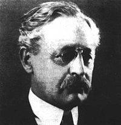

|
Marginal note to the debate with Aleksandr
Duguin
The Pivot of History according
to Halford J. Mackinder
Olavo de Carvalho
debateolavodugin.blogspot.com,
6 de julho de 2011
On January 25, 1904, the geographer and political scientist
Halford J. Mackinder (1861-1947) presented to the Royal Geographic Society
the thesis that Central Asia was the “pivot of History” and
that in the following decades Russia, based on that area, was in a most
advantageous position to expand its power. [1]

Halford J. Mackinder
With no intention of creating a general theory of History, or of postulating
a geographical determinism à la Buckle, and rather recognizing
that all he could do was to speculate about “some aspects”
of the geographical determinants of the historical process, Mackinder
stressed that geography imposed precise limits upon human initiative,
favoring some actions and rendering others difficult.
The geographical configuration of the Russian steppe had specially favored
the action of nomadic hordes which, coming from the depths of Asia, rode
through the area on horseback to invade Western Europe.
[2] The consequences of this had been portentous:
“A repellent personality performs a valuable social function
in uniting his enemies and it was under the pressure of external barbarism
that Europe achieved her civilization.” [3]
“For a thousand years a series of horse-riding peoples emerged
from Asia through the broad interval between the Ural mountains and
the Caspian sea, rode through the open spaces of southern Russia, and
struck home into Hungary in the very heart of the European peninsula,
shaping by the necessity of opposing them the history of each of the
great peoples around—the Russians, the Germans, the French, the
Italians, and the Byzantine Greeks.” [4]
What swayed the tides of fate in favor of the Europeans were two factors.
First, the intrinsic limitations of the barbarians’ attack potential:
“That [the barbarian invasion] stimulated healthy and powerful
reaction, instead of crushing opposition under a widespread despotism,
was due to the fact that the mobility of their power was conditioned
by the steppes, and necessarily ceased in the surrounding forests and
mountains.” [5]
Secondly, the evolution of maritime technique, which inaugurated the
era of the great navigations:
“The all-important result of the discovery of the Cape road
to the Indies was to connect the western and eastern coastal navigations
of Euro- Asia, . . . and thus in some measure to neutralize the strategical
advantage of the central position of the steppe – nomads by pressing
upon them in rear. The revolution commenced by the great mariners of
the Columbian generation endowed Christendom with the widest possible
mobility of power...
“The broad political effect was to reverse the relations
of Europe and Asia, for whereas in the Middle Ages Europe was caged
between an impassable desert to south, an unknown ocean to west, and
icy or forested wastes to north and north-east, and in the east and
south-east was constantly threatened by the superior mobility of the
horsemen and camelmen, she now emerged upon the world, multiplying more
than thirty-fold the sea surface and coastal lands to which she had
access”. [6]
But this did not lead to the end of land-power. If this kind of power
was concentrated in the East, while the West further developed maritime
power, it was not only due to diversity of geographic conditions, but
because of a difference of cultures:
“It is probably one of the most striking coincidences of
history that the seaward and the landward expansion of Europe should,
in a sense, continue the ancient opposition between Roman and Greek.
Few great failures have had more far-reaching consequences than the
failure of Rome to Latinize the Greek. The Teuton was civilized and
Christianized by the Roman, the Slav in the main by the Greek. It is
the Romano-Teuton who in later times embarked upon the ocean; it was
the Graeco-Slav who rode over the steppes, conquering the Turanian.
Thus the modern land-power differs from the sea-power no less in the
source of its ideals than in the material conditions of its mobility.”
If the era of the great navigations had favored Europe, in more recent
times, the evolution of technique indicated that land-power, hence Euro-Asia,
received a fresh invigoration:
“A generation ago steam and the Suez canal appeared to have
increased the mobility of sea-power relatively to land-power. Railways
acted chiefly as feeders to ocean-going commerce. But transcontinental
railways are now transmuting the conditions of land-power, and nowhere
can they have such effect as in the closed heart-land of Euro- Asia,
in vast areas of which neither timber nor accessible stone was available
for road-making. . . The Russian army in Manchuria is as significant
evidence of mobile land-power as the British army in South Africa was
of sea-power.” [7]
In the medium term, everything favored Russian hegemony:
“The spaces within the Russian Empire and Mongolia are so
vast, and their potentialities in population, wheat, cotton, fuel, and
metals so incalculably great, that it is inevitable that a vast economic
world, more or less apart, will there develop inaccessible to oceanic
commerce.”
At this point came a decisive generalization, which would make Mackinder
famous:
“As we consider this rapid review of the broader currents
of history, does not a certain persistence of geographical relationship
become evident? Is not the pivot region of the world’s politics
that vast area of Euro-Asia which is inaccessible to ships, but in antiquity
lay open to the horse-riding nomads, and is today about to be covered
with a network of railways?
. . . Russia replaces the Mongol Empire. Her pressure on Finland, on
Scandinavia, on Poland, on Turkey, on Persia, on India, and on China,
replaces the centrifugal raids of the steppemen. In the world at large
she occupies the central strategical position held by Germany in Europe.
She can strike on all sides and be struck from all sides, save the north.
The full development of her modern railway mobility is merely a matter
of time." [8]
And the prediction that would become so influential on international
politics in the twentieth century:
“The oversetting of the balance of power in favour of the
pivot state, resulting in its expansion over the marginal lands of Euro-Asia,
would permit of the use of vast continental resources for fleet-building,
and the empire of the world would then be in sight. This might happen
if Germany were to ally herself with Russia. The threat of such an event
should, therefore, throw France into alliance with the over-sea powers,
and France, Italy, Egypt, India, and Korea would become so many bridge
heads where the outside navies would support armies to compel the pivot
allies to deploy land forces and prevent them from concentrating their
whole strength on fleets. . . . The development of the vast potentialities
of South America might have a decisive influence upon the system. They
might strengthen the United States…”
Notas:
1. Halford J.
Mackinder, “The geographical pivot of History”, The Geographical
Journal, No 4, April, 2004, Vol. XXIII, pp. 421-444. [voltar]
2. “Thus
the core of Euro-Asia, although mottled with desert patches, is on the
whole a steppe-land supplying a wide-spread if often scanty pasture,
and there are not a few river-fed oases in it, but it is wholly unpenetrated
by waterways from the ocean. In other words, we have in this immense
area all the conditions for the maintenance of a sparse, but in the
aggregate considerable, population of horse-riding and camel-riding
nomads.” Op. cit. p. 429. [voltar]
3. P. 423. [voltar]
4. P. 427. [voltar]
5. Id. ibid. [voltar]
6. p. 432-433.
[voltar]
7. P. 434. [voltar]
8. P. 435-36. [voltar]
|